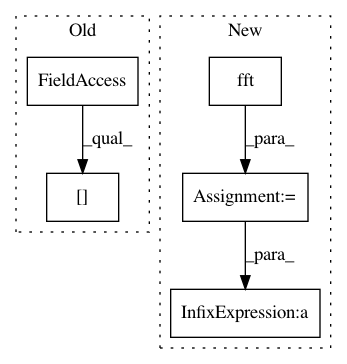

d8ab8131e19498c2b9bed8d218e4e46eedc7cf21,librosa/tf_agc.py,,tf_agc,#,106
Before Change
f2a = melfb(sample_rate, len(frame), num_frequency_bands, mel_filter_width)
f2a = f2a[:,:(round(len(frame)/2) + 1)]
n = f2a.shape[0]
// initialze the state vector
state = numpy.zeros( (n, 1) )
fbg = numpy.zeros( (n, 1) )
After Change
pass
// FFT each frame
D = scipy.fft(frame)
// multiply by f2a
audiogram = numpy.dot(f2a, numpy.abs(D))
//// DPWE
// state = max([alpha*state,audgram(:,i)],[],2);
// fbg(:,i) = state;
// ...
//
state = numpy.maximum(alpha * state, audiogram)
//E = diag(1./(sf2a+(sf2a==0))) * f2a" * fbg;
E = normalize_f2a * numpy.dot(f2a.T, state);
//% Remove any zeros in E (shouldn"t be any, but who knows?)
//E(E(:)<=0) = min(E(E(:)>0));
//% invert back to waveform
//y = istft(D./E);
y = scipy.ifft(D/E)
pass
pass
In pattern: SUPERPATTERN
Frequency: 3
Non-data size: 5
Instances
Project Name: librosa/librosa
Commit Name: d8ab8131e19498c2b9bed8d218e4e46eedc7cf21
Time: 2012-10-20
Author: brm2132@columbia.edu
File Name: librosa/tf_agc.py
Class Name:
Method Name: tf_agc
Project Name: librosa/librosa
Commit Name: c18f5c4bf4e6ed16fa82264636d440174c59fbca
Time: 2013-11-15
Author: brm2132@columbia.edu
File Name: librosa/core.py
Class Name:
Method Name: ifgram
Project Name: librosa/librosa
Commit Name: 320cbfd379a8e8de6ff49eeba35ca16750e80d38
Time: 2015-08-25
Author: brian.mcfee@nyu.edu
File Name: librosa/core/audio.py
Class Name:
Method Name: autocorrelate